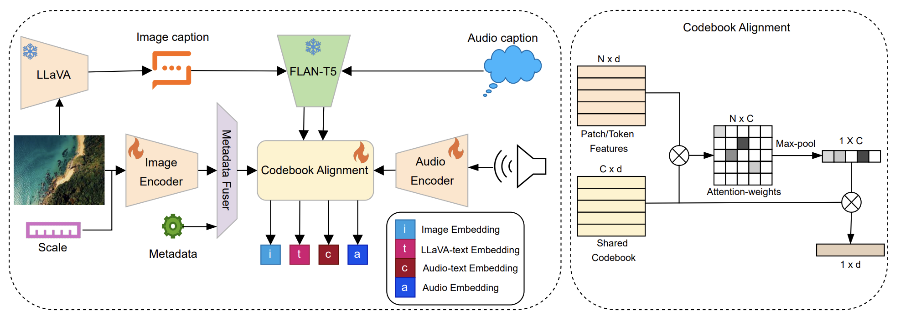
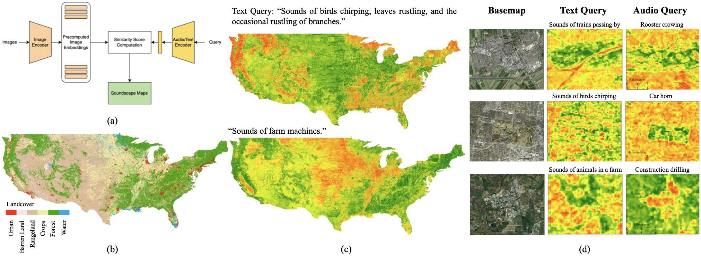
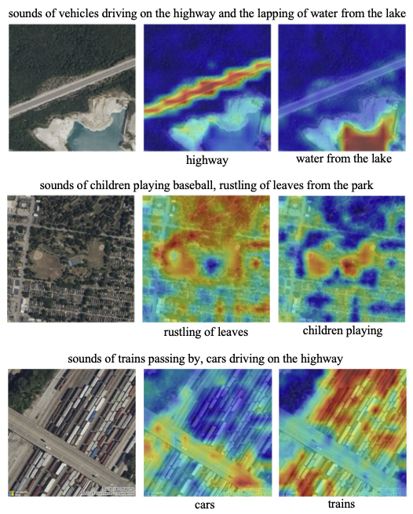

We present Sat2Sound, a unified multimodal framework for geospatial soundscape understanding, designed to predict and map the distribution of sounds across the Earth's surface. Existing methods for this task rely on paired satellite images and geotagged audio samples, which often fail to capture the full diversity of sound at a location. Sat2Sound overcomes this limitation by augmenting datasets with semantically rich, vision-language model-generated soundscape descriptions, which broaden the range of possible ambient sounds represented at each location. Our framework jointly learns from audio, text descriptions of audio, satellite images, and synthetic image captions through contrastive and codebook-aligned learning, discovering a set of "soundscape concepts" shared across modalities, enabling hyper-localized, explainable soundscape mapping. Sat2Sound achieves state-of-the-art performance in cross-modal retrieval between satellite image and audio on the GeoSound and SoundingEarth benchmarks. Finally, by retrieving detailed soundscape captions that can be rendered through text-to-audio models, Sat2Sound enables location-conditioned soundscape synthesis for immersive and educational applications, even with limited computational resources.

Sat2Sound jointly learns from satellite imagery, audio, audio captions, and synthetic image captions through contrastive and codebook-aligned learning. A shared multimodal codebook of soundscape concepts aligns the four modalities in a single embedding space, enabling explainable, hyper-localized soundscape mapping.
Click a location on a satellite map and Sat2Sound retrieves a matching soundscape from the gallery.
Try it locally: python -m demos.sat2sound_retrieval.

(a) Soundscape mapping framework using Sat2Sound's encoders. (b) A landcover map for the United States for comparison to soundscape maps. (c) Country-scale soundscape maps created for queries over the USA with a reference land cover map for comparision. (d) City-scale soundscape maps using different queries for cities in the Netherlands (top), the USA (middle), and India (bottom).

Alignment between patches in a single image and soundscape concepts in textual query.
@inproceedings{khanal2026sat2sound,
title = {{Sat2Sound}: A Unified Framework for Zero-Shot Soundscape Mapping},
author = {Khanal, Subash and Sastry, Srikumar and Dhakal, Aayush and
Ahmad, Adeel and Stylianou, Abby and Jacobs, Nathan},
booktitle = {IEEE/ISPRS Workshop: Large Scale Computer Vision for
Remote Sensing (EarthVision)},
year = {2026},
}